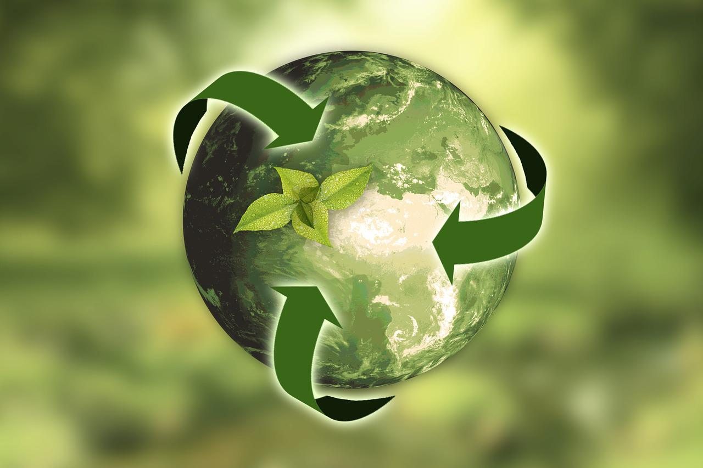

Importancia de Reciclar
El reciclaje es una práctica esencial que contribuye a la conservación de recursos naturales, la reducción de la contaminación ambiental y la generación de empleo. Al reducir la necesidad de extraer materias primas, como minerales y petróleo, el reciclaje preserva valiosos recursos, disminuye la contaminación del aire, agua y suelo, y ahorra energía al fabricar productos con materiales reciclados. Además, promueve la conciencia ambiental, fomenta la economía local y nacional, y educa sobre la importancia del consumo responsable, todo ello con el objetivo de crear un futuro sostenible y saludable para las generaciones venideras. ¡Únete al movimiento del reciclaje y marca la diferencia para nuestro planeta!
Leer Entrada